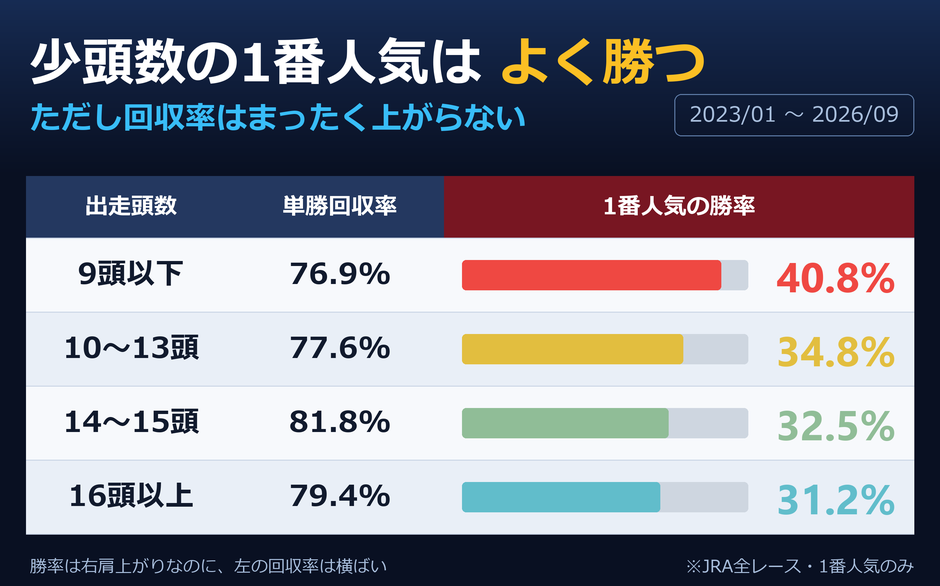

出走頭数が少ないレースの1番人気は、はっきりよく勝ちます。それでも回収率は上がりません。

16頭以上のレースでは1番人気の勝率は31.2%ですが、9頭以下だと40.8%まで上がります。相手が少ないぶん勝ちやすい。直感どおりです。
ところが単勝回収率は、どの頭数帯でもほとんど同じでした。勝ちやすさがそのままオッズの低さに変換されていて、手元に残る比率は変わらない。
「当たりやすさ」と「儲かりやすさ」は別物だ、という話です。少頭数だから堅い、は正しい。だから買えば得だ、は正しくありません。
この2つを混ぜると、的中率を上げる工夫がそのまま収支の改善だと感じられてしまいます。実際には、的中率を上げる一番簡単な方法は「堅いレースだけを買う」ことで、その方法では取り分は1円も増えません。予想サービスの的中率が高いこと自体は、腕の証明にも、儲かる証明にもならない理由がここにあります。
逆に言えば、少頭数のレースは「当てたい」ときには合理的な選択です。外れ続けると賭けを続けられなくなる、という意味では的中率にも実用的な価値があります。ただしそれは収支の話ではなく、自分がどこで楽しむかという話として切り分けたほうが混乱しません。
頭数そのものが予測を難しくするか、という論点もあります。多頭数のレースは展開の分岐が増え、着順の予測は難しくなるはずです。ただし難しさが回収率に効くとは限りません。難しいレースでは買う側も自信を持てないぶん、オッズのほうも慎重になるからです。この表で横ばいになっているのは、その2つが釣り合っている姿だと考えられます。